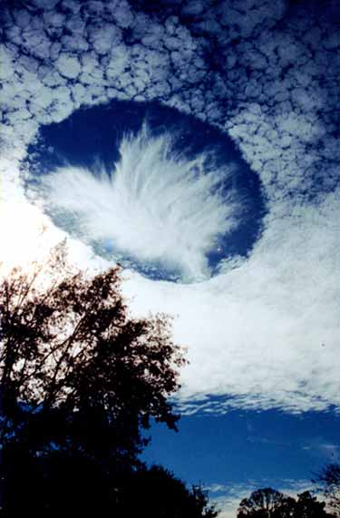

| Subject: RE: scalar hole in
clouds ? Date: Tue, 13 Jan 2004 23:12:39 -0600 Tony, That one is a beauty. The "continuous" weather engineering over the U.S. began on July 4, 1976 -- a bicentennial present to us from the Russians. Prior to that time, it was tested over the U.S. quite a few times. One of the early type tests was precisely the creation of such "holes in the clouds", often looking as if precisely drawn with drafting tools. As I recall, I saw several articles (and pictures) back then of that phenomenon, in the various weather magazines and weather journals. Cheers, Tom Tuesday, January 13, 2004 7:49 PM To: Tom Bearden Subject: Fwd: scalar hole in clouds ? http://antwrp.gsfc.nasa.gov/apod/ap040112.html
 |